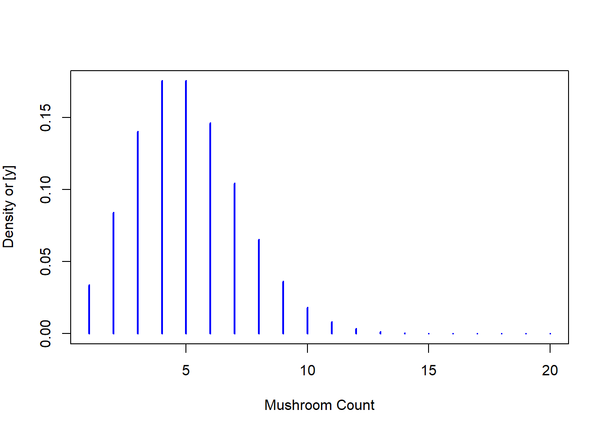

Philosophy behind it. Frequentist approach : “What is the probability to observe my data given my model.”
Bayesian approach : “What is the probability of m y model given my data.”
Rappel : - différence entre loi à posterio jointes et marginales
General theory behind Bayesian approach.
Explanation in the special case of conjugation between prior and posterior
Main objective, for context
First, let’s take an simple example to explain the idea behind Bayesian method. We want to estimate the mean abundance per \(m^2\) of one fungus in a forests. To do that, we set up it some sampling area in which we count the number of mushroom. We can simulate the data by taking random observations in a poisson distribution. Let’s suppose that our studies as 200 sampling area. Because it is count data, number of mushroom that we will count should follow a poisson distribution :
n_sample =200# sampling arealbda =5# mean of poisson distributionpois_distr =dpois(1:20, lambda = lbda)plot(pois_distr,type ="h",lwd =2, col ='blue',xlab ="Mushroom Count", ylab =expression(paste( 'Density or ','[y]')) )

To simulate the sampling campaign we are taking values in this poisson distribution . In our case those will be used to estimate the mean number of mushroom in the forest.(\(\lambda = 5\) is already known because we simulate the data, but in reality this is an unknown).
So let’s pretend that we don’t know the\(\lambda\). We want to find the the value of the mean number of mushroom we will call \(\hat{\lambda}\) and we also want to know the probability of this \(\hat{\lambda}\). In fact the Bayesian method will give us the multiple estimated mean \(\hat{\lambda}\) and the probability of those value to be true knowing the observation \(Y\). We can simply write this as follow \([\hat{\lambda} \mid Y]\) which is the probability of hat lambda knowing our observations. This probability can be found with the equation :
The two component of the right hand side of the equation are \([Y \mid \hat{\lambda} ]\) the likelihood of our data and \([\hat{\lambda}]\) the prior distribution. First lets start with the likelihood. Our data follow a poisson distribution so our likelihood will follow a poisson distribution :
This a first good step, but there is a small issue here, this formula isn’t completely usable in this form. This is because it can only take one observation. In english words it is like asking what is the probability of one observation (one count of mushroom) given a model with a mean \(\hat{\lambda}\). It it clear that this form isn’t powerful enough because it use only one observation. What we want is to use all the data that we have, we want to know the probability of all the observations given a model with a mean \(\hat{\lambda}\). To do so we can write the likelihood of all our data \(Y\) as the product of the likelihood of each observation \(y_i\). (We are allowed to do this only because observations are independent)
As you can see we don’t keep the \(\frac{1}{y_i!}\), it is because we are only interested in the terms that are impacted by \(\hat{\lambda}\). The last form which is proportional to the likelihood function have a more convenient form for the next step. Lets rearrange the function in a more convenient form
The fist line just use the power/exponential multiplication properties. The second line is just a writing simplification that is common in other resources, \(mean(y)=\bar{y} = \frac{1}{n}\sum_{i=1}^n y_i \Rightarrow n\cdot \bar{y} = \hat{\lambda}^{\sum^{n}_{i=1} y_i}\).
Now we want to find the prior distribution of \(\hat{\lambda}\). Fist we have to choose the distribution family of our prior. We will use a Gamma distribution. We are using this one because it let the prior and the posterior have the same distribution family, it is called conjugate distributions. The the prior is called a conjugate prior for the likelihood function. Which mean that the prior function and the likelihood function have the same form ! And this means that we can simplify ! lets try it :
Same as the likelihood, we are only interested by the term that vary with \(\hat{\lambda}\) so we remove \(\frac{\beta^\alpha}{\Gamma(\alpha)}\) and keep the proportional formula of the prior. We can now find real formula of our posterior distribution.
Do the last formula remind you something familiar ? That’s right it is a Gamma distribution ! This is the magic of the conjugate distributions. We can now write :
We can do some simulations to show the results. We are looking for the probability of \(\hat{\lambda}\), so for the computation we create a vector of all \(\hat{\lambda}\) for which we want to know the probability:
lambda_hat <-seq(0,10, by =0.01)
And now, in order to compare them, we compute the distribution of the prior and the posterior (which are both following a gamma distribution) with an increasing amount of sample:
alph =1bet=1par(mfrow =c(2,3))n_obs =0for(n_obs inlist(0,1:5,1:10,1:50,1:100,1:200)){# prior distribution l_prior =dgamma(lambda_hat, shape = alph, rate = bet)# posterior distribution l_post =dgamma(lambda_hat, shape = alph +sum(Y[n_obs]), rate = bet +max(n_obs))plot(lambda_hat,l_prior, ylim =c(0,max(c(l_post,l_prior))),type ='l', lwd =2, col ='orange',xlab =expression(lambda), ylab =expression(paste('[', lambda, '|y]')) )lines(lambda_hat,l_post, type ='l',lty =3, lwd =2, col ='purple')abline(v =5, lty =2, lwd =2)title(paste("n = ",max(n_obs)))}
When we add no data in the computation of the posterior, it is normal that we don’t see any modifications from the prior. Adding 5 observation already bring some good information, the prior and the posterior have no longer the same shape and we have a better estimation of the true \(\lambda\). Increase the number of data give us a better approximation of the true mean. The density of probability is also higher with a lot fo data, because we have more confidence in the approximation.
When approximation by computation is needed
En statistiques bayésiennes, comme dit précédemment l’objectif est d’actualiser nos croyances sur les paramètres d’un modèle en combinant une connaissance a priori avec l’information observée dans nos données récoltées sur le terrain. Cependant, le calcul direct de la distribution postérieure peut souvent être compliqué à calculer analytiquement, surtout dans des modèles complexes. Le passage par des loi de distribution conjugées est une solution pour pallier au problème mais ceci n’est pas toujours possibles. C’est là que les algorithmes Markov Chain Monte Carlo (MCMC) interviennent pour estimer les distributions a posteriori des paramètres.
Il existe de multiple algorithmes de type MCMC ( Metropolis-Hastings, échantillionneur de Gibbs, Hamiltonian Monte Carlo), chacun possèdes ses avantages et ses inconvénients et le choix de l’algorithme dépend de la situation d’application. Cependant ils partent tous de la même base théorique.
L’idée essentielle d’un algorithme MCMC est de créer une séquence de nombre aléatoire dépendant via une chaine de Markov. Quand la chaine arrive à l’équilibre (état stationnaire) elle forme un échantillionage au sein de la loi a posteriori ce qui permet de calculer les quantités qui nous intéressent : moyennes, variances, quantiles…
Implémentation de l’algorithm de Metropolis-Hastings
Let’s implemant the algortihm to try to understand how it works. Dans les lignes suivantes nous allons décrire les différentes étapes de l’algorithme de Matropolis-Hastings avec les lignes de codes R correspondantes.
#Step 1 : Definition of the likelihood function and the prior law Comme pour chaque début d’analyse statistique bayésienne, on pause le problème et on définit la loi de probabilité de la vraissemblance et les loi à priori des paramètres à estimer.
Ici on reprend le problème de nos comptages de champignions, on choisit donc une loi de poisson pour la vraissemblance. Et cette fois ci pour l’estimation du paramètre \(\lambda\) on choisi un loi uniforme allant de \(0\) à \(1000\) . On fait donc l’hypothèse de n’avoir aucun information sur le paramètre \(\lambda\). Aucune information n’est porté par le prior.
On va chercher à se déplacer il faut donc définir une fonction pour dertimer une position candidat. On tire ici aléatoirement cette position dans une loi normal de moyenne \(\lambda_c\) c’est à dire la position à laquelle on part et on choisit abitrairement une valeur d’écart-type.
Une fois qu’on a cette position candidat il faut décider si si on la garde ou pas, le critère de décision à calculer est la ratio de Metropolis-Hastings \(r\). On p
Il y a un parmètre dont on n’a pas discuter dans cette fonction c’est le \(thin\), il signifie qu’on ne va sauvegarder les échantillionnage au sein de la chaine avec un interval égal à \(thin\). C’est dû au fait que les échantillion sont corrélé entre eux car dépendant dans la position précédente et donc ne reflète donc pas correctement la distribution. Par conséquent, si l’on souhaite avoir des échantillons indépendants, on doit éliminer la majorité des échantillons pour ne conserver qu’un échantillon tous les \(thin\) pas, avec \(thin\) « suffisamment grand ».
p1 <-ggplot(data = mcmc_df)+geom_histogram(aes(x = step))+theme_bw()alph =1bet=1posterior_exact <-tibble(p =seq(0,5, length.out =10001)) %>%mutate(posterior =dgamma(p, shape = alph +sum(Y), rate = bet +5000))p1 +geom_line(data = posterior_exact, aes(x=p, y =posterior), col ='red')
`stat_bin()` using `bins = 30`. Pick better value with `binwidth`.
Le premier graphique représante
Discussion with two parameters
Some words about Rjags
Après une implémentation from scratch de l’algorithme de Metropolis Hastings il est temps de vous annoncer qu’il existe des outils qui permettent de réaliser tout ceci. Un de plus courrament utilisé c’est RJags…
IV) Prior Selection in Ecology
IV-1) The role of prior knowledge and beliefs
In Bayesian statistics, prior knowledge and beliefs play a central role in the formulation and interpretation of Bayesian models. As explained before, the fundamentals of Bayesian inference lies in combining prior information with observed data to obtain updated or posterior probabilities.
Incorporating existing information to a data set can be based on previous studies, expert opinions, historical data or simply known subjective beliefs. It will allow the future model to avoid over-fitting and favor a more plausible and simple estimation.
IV-2) Informative and non-informative priors
IV-3) Incorporating expert opinions and literature data
V) Case Studies in Bayesian Ecology
V-1) Highlighting specific ecological studies that employed Bayesian methods
V-2) Illustrative examples from different ecological sub-disciplines